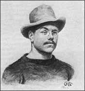

Gerhard Heilmann
1859–1946
Gerhard Heilmann was raised in a small town in Denmark. Although he briefly studied technology and then medicine, he decided at the age of 24, to pursue a career as an artist. He became a painter's apprentice and later was employed as a painter at the Royal Porcelain Works in Copenhagen. In 1902, Heilmann left the Royal Porcelain Works to work as a freelancer, painting landscapes, doing pen-and-ink drawings, illustrating books, and designing official Danish banknotes.
Heilmann had always been deeply interested in birds and the question of how they had evolved. He was in his early fifties when he decided to pursue this question seriously. Using the same attention to detail that he had previously applied to his artwork, Heilmann began to study the fossil record, creating life-like drawings of various dinosaurs. Between 1912 and 1916 Heilmann published a number of articles on the evolution of birds, which were translated into English in 1926 and published collectively under the title, The Origin of Birds.
Heilmann argued that birds could not have descended directly from dinosaurs, as was then thought. His argument was based primarily on the presence of a furcula (wishbone) in birds. The ancestors of dinosaurs had clavicles, but dinosaurs did not, according to the information available to Heilmann. It seemed unlikely that a structure as complex as a clavicle could have evolved once, then disappeared, then reappeared later in evolutionary history. Therefore, Heilmann proposed that birds and dinosaurs must have evolved separately from earlier ancestors. In more recent years, paleontologists have discovered numerous dinosaurs that did in fact have clavicles, and now most scientists think birds did evolve from dinosaurs. For roughly 40 years, however, Heilmann's book was the standard text on the evolution of birds.
Heilmann was 67 years old when The Origin of Birds was published. In his later years, he continued to write and illustrate books about birds. In 1940, on his 81st birthday, he published a book about the origin and evolution of the universe. He continued working on a second book on the same subject until his death in 1946.